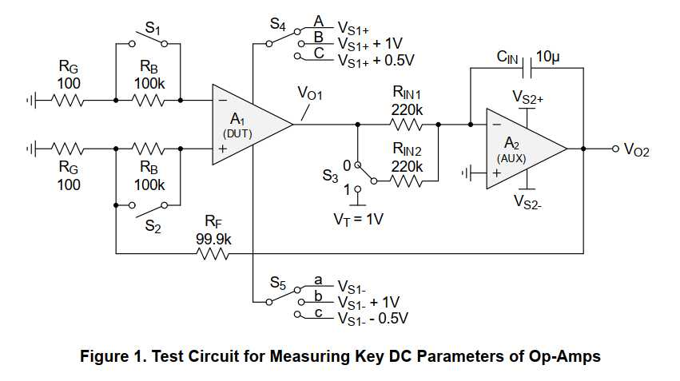
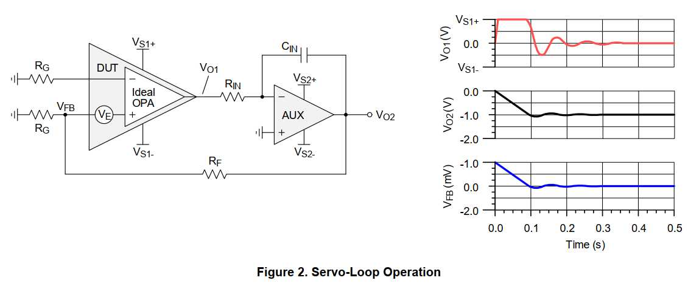
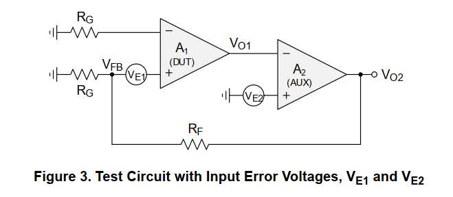
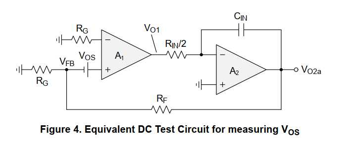
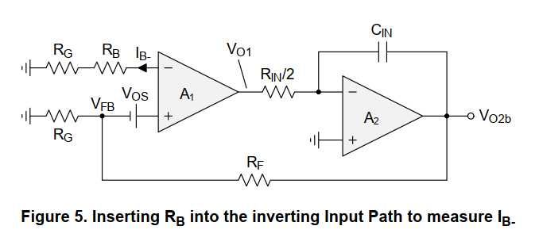
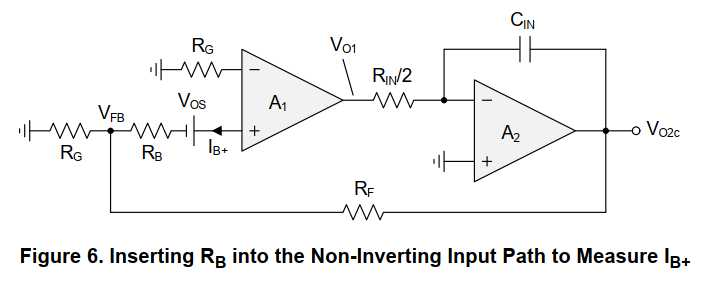
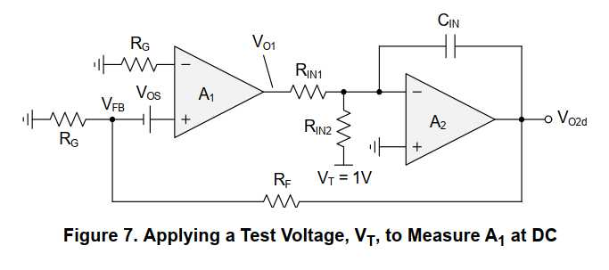
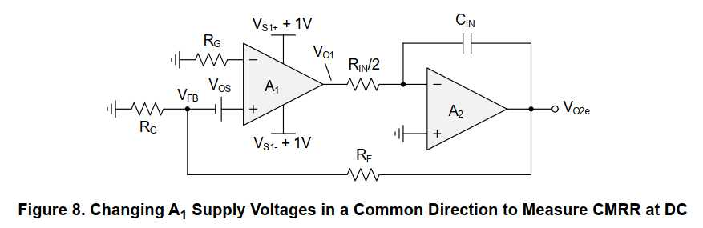
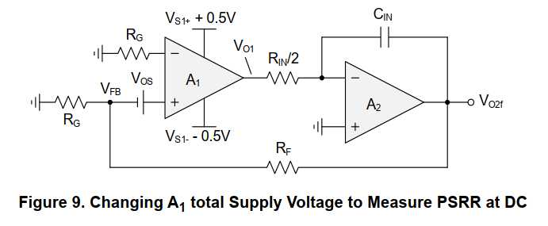
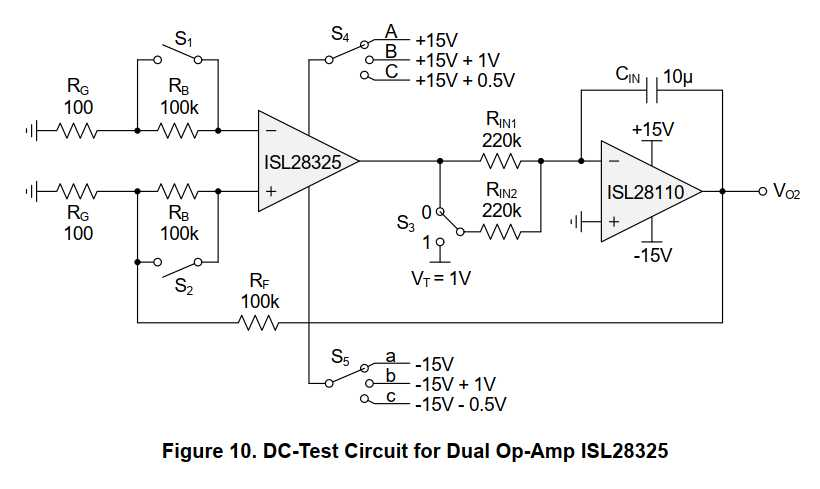

<!-- MathJax для формул -->
<script>
  window.MathJax = {
    tex: { inlineMath: [['\\(', '\\)']], displayMath: [['\\[', '\\]']] },
    svg: { fontCache: 'global' }
  };
</script>
<script src="js/tex-svg.js" async></script>

<style>
  :root {
    --renesas-red: #c8102e;
    --dark: #222;
    --gray: #666;
    --light: #f5f5f5;
  }
  * { box-sizing: border-box; }
  article {
    font-family: "Segoe UI", Arial, sans-serif;
    color: var(--dark);
    line-height: 1.65;
    margin: 0;
    background: #fafafa;
  }
  .container {
    max-width: 900px;
    margin: 0 auto;
    padding: 30px 40px 60px;
    background: #fff;
    box-shadow: 0 0 12px rgba(0,0,0,.08);
  }
  header {
    border-bottom: 4px solid var(--renesas-red);
    padding-bottom: 15px;
    margin-bottom: 30px;
  }
  header .brand {
    color: var(--renesas-red);
    font-weight: 700;
    font-size: 1.4em;
    letter-spacing: 1px;
  }
  header h1 { font-size: 1.55em; margin: 10px 0 5px; }
  header .doc-meta { color: var(--gray); font-size: .9em; }
  h2 {
    color: var(--renesas-red);
    font-size: 1.25em;
    margin-top: 45px;
    border-left: 5px solid var(--renesas-red);
    padding-left: 10px;
  }
  .toc {
    background: var(--light);
    border: 1px solid #ddd;
    padding: 20px 30px;
    margin: 25px 0;
  }
  .toc h2 { border: none; padding: 0; margin: 0 0 10px; }
  .toc ol { margin: 0; padding-left: 20px; }
  .toc li { margin: 4px 0; }
  .toc a { color: var(--dark); text-decoration: none; }
  .toc a:hover { color: var(--renesas-red); }
  .toc ol ol { padding-left: 25px; }
  .equation {
    display: flex;
    align-items: center;
    gap: 15px;
    background: var(--light);
    border-left: 3px solid #ccc;
    padding: 10px 15px;
    margin: 18px 0;
    overflow-x: auto;
  }
  .equation .eq-label { color: var(--gray); font-size: .85em; white-space: nowrap; order: 2; }
  .equation .eq-body { flex: 1; order: 1; }
  figure {
    text-align: center;
    margin: 25px 0;
    padding: 15px;
    background: var(--light);
    border: 1px dashed #bbb;
  }
  figure img { max-width: 100%; height: auto; }
  figure .placeholder {
    display: inline-block;
    padding: 40px 60px;
    color: #999;
    font-style: italic;
  }
  figcaption { margin-top: 10px; font-weight: 600; font-size: .95em; }
  table {
    width: 100%;
    border-collapse: collapse;
    margin: 25px 0;
    font-size: .92em;
  }
  th, td {
    border: 1px solid #ccc;
    padding: 8px 10px;
    text-align: left;
    vertical-align: top;
  }
  th { background: var(--renesas-red); color: #fff; }
  tr:nth-child(even) { background: #f9f9f9; }
  .note {
    background: #fff7e6;
    border-left: 4px solid #e6a817;
    padding: 10px 15px;
    margin: 15px 0;
    font-size: .95em;
  }
  .intro {
    font-size: 1.05em;
    background: #f0f4f8;
    padding: 20px 25px;
    border-left: 4px solid var(--renesas-red);
    margin: 20px 0;
  }
  .table-caption { font-weight: 700; margin-bottom: 8px; }
  footer {
    margin-top: 50px;
    padding-top: 15px;
    border-top: 1px solid #ddd;
    color: var(--gray);
    font-size: .85em;
    text-align: center;
  }
  @media print { .container { box-shadow: none; } }
</style>
<article>
<div class="container">

<!-- ==================== СТРАНИЦА 1: ТИТУЛ ==================== -->
<header>
  <div class="brand">RENESAS</div>
  <h1>Настольное тестирование ключевых параметров постоянного тока операционных усилителей</h1>
  <div class="doc-meta">Документ по применению &nbsp;|&nbsp; R13AN0018EU0100 Ред.1.00 &nbsp;|&nbsp; 16 ноября 2022 г. &nbsp;|&nbsp; © 2022 Renesas Electronics</div>
</header>

<div class="intro">
  Сегодня многие инженеры полагаются на Spice-модели при оценке характеристик операционных усилителей (ОУ).
  Если вы подозреваете, что Spice-модель неточна или не содержит определённых параметров, вы можете собрать
  собственную систему тестирования ОУ и всё равно определить ключевые параметры прибора.
  <br><br>
  В данном документе по применению рассматривается универсальная тестовая схема, позволяющая измерять ключевые
  параметры постоянного тока операционного усилителя на лабораторном стенде.
</div>

<div class="toc">
  <h2>Содержание</h2>
  <ol>
    <li><a href="#sec1">Параметры постоянного тока</a>
      <ol>
        <li><a href="#sec11">Принцип работы сервопетли</a></li>
        <li><a href="#sec12">Погрешности входа AUX-усилителя пренебрежимо малы</a></li>
        <li><a href="#sec13">Измерение напряжения смещения входа, V<sub>OS</sub></a></li>
        <li><a href="#sec14">Измерение входного тока смещения по инвертирующему входу, I<sub>B−</sub></a></li>
        <li><a href="#sec15">Измерение входного тока смещения по неинвертирующему входу, I<sub>B+</sub></a></li>
        <li><a href="#sec16">Измерение коэффициента усиления с разомкнутой петлёй на постоянном токе, A<sub>OL(DC)</sub></a></li>
        <li><a href="#sec17">Измерение коэффициента ослабления синфазного сигнала на постоянном токе, CMRR<sub>(DC)</sub></a></li>
        <li><a href="#sec18">Измерение коэффициента подавления влияния источника питания на постоянном токе, PSRR<sub>(DC)</sub></a></li>
        <li><a href="#sec19">Результаты измерений для сдвоенного ОУ ISL28325</a></li>
      </ol>
    </li>
    <li><a href="#sec2">История ревизий</a></li>
  </ol>
</div>

<!-- ==================== СТРАНИЦА 2: РАЗДЕЛ 1 ==================== -->
<h2 id="sec1">1. Параметры постоянного тока</h2>
<p>
  Тестовая схема на <a href="#fig1">рисунке 1</a> позволяет измерять ключевые параметры постоянного тока
  тестируемого операционного усилителя (DUT) с помощью вспомогательного усилителя (AUX) в конфигурации сервопетли.
</p>
<p>
  Различные параметры постоянного тока, измеряемые этой схемой, и соответствующие положения переключателей
  приведены в <a href="#table1">таблице 1</a>.
</p>
<p>
  Схема использует двухполярное питание, но хорошо работает как с однополярными, так и с двухполярными
  операционными усилителями. По сути, она усиливает входные напряжения ошибки тестируемого устройства и делает
  их доступными на выходе AUX-усилителя.
</p>

<figure id="fig1">
  
  <figcaption>Рисунок 1. Тестовая схема для измерения ключевых параметров постоянного тока ОУ</figcaption>
</figure>

<p>
  Для тестируемого устройства подайте номинальное напряжение питания в двухполярном режиме, даже для ОУ с
  однополярным питанием. Например, для ОУ с однополярным питанием 3,3 В установите V<sub>S1</sub> = ±1,65 В.
</p>
<p>
  Для AUX-усилителя выберите ОУ с широкими шинами двухполярного питания от ±12 В до ±20 В, чтобы получить широкий
  динамический диапазон выходного напряжения на V<sub>O2</sub>. AUX-усилителю не нужно быть прецизионным — подойдёт
  ОУ общего назначения, поскольку влияние его входных погрешностей на точность измерений пренебрежимо мало.
  Это объясняется в разделе <a href="#sec12">«Погрешности входа AUX-усилителя пренебрежимо малы»</a>.
</p>

<table id="table1">
  <caption class="table-caption">Таблица 1. Положения переключателей для измерения ключевых параметров постоянного тока ОУ</caption>
  <thead>
    <tr>
      <th colspan="2">Измеряемые параметры</th>
      <th colspan="5">Положения переключателей <sup>[1]</sup></th>
    </tr>
    <tr>
      <th>Тип</th><th>Параметр</th>
      <th>S<sub>1</sub></th><th>S<sub>2</sub></th><th>S<sub>3</sub></th>
      <th>S<sub>4</sub></th><th>S<sub>5</sub></th>
    </tr>
  </thead>
  <tbody>
    <tr><td rowspan="6">Пост. ток (выход = TP1)</td><td>V<sub>OS</sub></td><td>1</td><td>1</td><td>0</td><td>A</td><td>a</td></tr>
    <tr><td>I<sub>B−</sub></td><td>0</td><td>1</td><td>0</td><td>A</td><td>a</td></tr>
    <tr><td>I<sub>B+</sub></td><td>1</td><td>0</td><td>0</td><td>A</td><td>a</td></tr>
    <tr><td>A<sub>OL</sub></td><td>1</td><td>1</td><td>1</td><td>A</td><td>a</td></tr>
    <tr><td>CMRR</td><td>1</td><td>1</td><td>0</td><td>B</td><td>b</td></tr>
    <tr><td>PSRR</td><td>1</td><td>1</td><td>0</td><td>C</td><td>c</td></tr>
  </tbody>
</table>
<p style="font-size:.85em;color:var(--gray)">1. Для S<sub>1</sub>, S<sub>2</sub>, S<sub>3</sub>: 1 = замкнут, 0 = разомкнут</p>

<!-- ==================== СТРАНИЦА 3: РАЗДЕЛ 1.1 ==================== -->
<h2 id="sec11">1.1 Принцип работы сервопетли</h2>
<p>
  Работа сервопетли, или петли отрицательной обратной связи, показана на <a href="#fig2">рисунке 2</a>. Здесь
  тестируемое устройство работает с коэффициентом усиления при разомкнутой петле. Для лучшего понимания можно
  разделить тестируемое устройство на идеальный ОУ с внешним входным напряжением ошибки постоянного тока V<sub>E</sub>.
</p>
<p>
  В момент t = 0 напряжение V<sub>E</sub> усиливается высоким коэффициентом усиления тестируемого устройства при
  разомкнутой петле, в результате чего выходное напряжение (V<sub>O1</sub>) уходит к одной из шин питания — в данном случае
  к положительной шине (V<sub>S1+</sub>). Этот резкий рост V<sub>O1</sub> преобразуется интегратором в постепенно
  спадающее отрицательное выходное напряжение V<sub>O2</sub>. Напряжение V<sub>O2</sub> ослабляется делителем
  R<sub>F</sub>–R<sub>G</sub> и подаётся обратно на положительный вход тестируемого устройства как напряжение обратной
  связи (V<sub>FB</sub>): V<sub>FB</sub> = V<sub>FB</sub> × β. Поскольку коэффициент обратной связи является величиной,
  обратной коэффициенту усиления схемы, β = 1/G, можно также записать: V<sub>FB</sub> = V<sub>O2</sub>/G.
</p>

<figure id="fig2">
  
  <figcaption>Рисунок 2. Работа сервопетли</figcaption>
</figure>

<p>
  Поскольку V<sub>FB</sub> имеет полярность, противоположную V<sub>E</sub>, сумма V<sub>E</sub> + V<sub>FB</sub> даёт
  меньшее отрицательное значение V<sub>O1</sub>. Это заставляет интегратор интегрировать в сторону меньшего
  положительного значения V<sub>O2</sub>.
</p>
<p>
  Этот регулирующий процесс продолжается до тех пор, пока V<sub>O1</sub> не станет равным напряжению на положительном
  входе AUX-усилителя, то есть 0 В. В этот момент ток, поступающий в интегратор, равен нулю, интегрирование
  прекращается, и V<sub>O</sub> остаётся постоянным. Если V<sub>O1</sub> = 0 В, то суммарная входная ошибка также должна
  быть равна нулю: V<sub>FB</sub> + V<sub>E</sub> = 0 В, что требует V<sub>E</sub> = −V<sub>FB</sub>.
</p>
<p>Чтобы выразить входную ошибку через выходное напряжение, можно подставить V<sub>FB</sub> = V<sub>O2</sub>/G и получить:</p>

<div class="equation">
  <div class="eq-body">
    \[ V_E = -\frac{V_{O2}}{G} \]
  </div>
</div>

<p>Это означает, что входное напряжение ошибки равно измеренному инвертированному выходному напряжению, делённому на коэффициент усиления схемы.</p>

<!-- ==================== СТРАНИЦА 4: РАЗДЕЛ 1.2 ==================== -->
<h2 id="sec12">1.2 Погрешности входа AUX-усилителя пренебрежимо малы</h2>
<p>
  На <a href="#fig3">рисунке 3</a> изображена упрощённая тестовая схема в установившемся состоянии, когда V<sub>O2</sub>
  стабилизировалось и остаётся постоянным. В этом состоянии конденсатор C<sub>IN</sub> полностью заряжен и находится в
  высокоомном состоянии, а ток через R<sub>IN</sub> не течёт. Поэтому оба компонента можно опустить, что указывает
  на то, что A<sub>2</sub> работает с коэффициентом усиления при разомкнутой петле. Входные погрешности каждого ОУ
  объединены в напряжениях ошибки V<sub>E1</sub> и V<sub>E2</sub>.
</p>

<figure id="fig3">
  
  <figcaption>Рисунок 3. Тестовая схема с входными напряжениями ошибки, V<sub>E1</sub> и V<sub>E2</sub></figcaption>
</figure>

<p>Чтобы определить влияние V<sub>E2</sub> на выходное напряжение схемы, составим уравнение для V<sub>O2</sub>:</p>

<div class="equation">
  <span class="eq-label">(УР. 1)</span>
  <div class="eq-body">
    \[ V_{O2} = A_2 (V_{E2} - V_{O1}) \]
  </div>
</div>

<p>Выходное напряжение A<sub>1</sub> выводится аналогичным образом:</p>

<div class="equation">
  <span class="eq-label">(УР. 2)</span>
  <div class="eq-body">
    \[ V_{O1} = A_1 (V_{E1} + V_{FB} - 0) = A_1 (V_{E1} + V_{FB}) \]
  </div>
</div>

<p>Как упоминалось ранее, напряжение обратной связи равно выходному напряжению, делённому на коэффициент усиления схемы:</p>

<div class="equation">
  <span class="eq-label">(УР. 3)</span>
  <div class="eq-body">
    \[ V_{FB} = \frac{V_{O2}}{G} \quad \text{при} \quad G = 1 + \frac{R_F}{R_G} \]
  </div>
</div>

<p>Затем, подставив уравнение 2 и уравнение 3 в уравнение 1 и решив относительно V<sub>O2</sub>, получим:</p>

<div class="equation">
  <span class="eq-label">(УР. 4)</span>
  <div class="eq-body">
    \[ V_{O2} = -G \times \left( V_{E1} - \frac{V_{E2}}{A_1} \right) \]
  </div>
</div>

<p>
  Уравнение 4 показывает, что входные погрешности A<sub>2</sub> подавляются высоким коэффициентом усиления A<sub>1</sub>
  при разомкнутой петле, что сводит вклад ошибки A<sub>2</sub> к нулю: V<sub>E2</sub>/A<sub>1</sub> ≈ 0. Таким образом,
  выходное напряжение представляет исключительно входную ошибку A<sub>1</sub>, усиленную коэффициентом усиления схемы:
</p>

<div class="equation">
  <span class="eq-label">(УР. 5)</span>
  <div class="eq-body">
    \[ V_{O2} = -V_{E1} \times G \]
  </div>
</div>

<!-- ==================== СТРАНИЦА 5: РАЗДЕЛЫ 1.3 и 1.4 ==================== -->
<h2 id="sec13">1.3 Измерение напряжения смещения входа, V<sub>OS</sub></h2>
<p>
  На <a href="#fig4">рисунке 4</a> показана эквивалентная тестовая схема для измерения V<sub>OS</sub> усилителя A<sub>1</sub>.
  Здесь переключатели S<sub>1</sub> и S<sub>2</sub> замкнуты, шунтируя резисторы смещения входа R<sub>B</sub>. Входные
  токи смещения по-прежнему протекают через резисторы усиления R<sub>G</sub>, но напряжения на этих резисторах
  значительно меньше V<sub>OS</sub> и поэтому могут быть проигнорированы.
</p>
<p>
  Поскольку установившееся состояние V<sub>O2</sub> достигается, когда V<sub>O1</sub> равно нулю, можно записать
  уравнение для V<sub>O1</sub>:
</p>

<div class="equation">
  <span class="eq-label">(УР. 6)</span>
  <div class="eq-body">
    \[ V_{O1} = 0 = A_1 (V_{OS} + V_{FB} - 0) \]
  </div>
</div>

<p>При V<sub>FB</sub> = V<sub>O2</sub>/G решение относительно V<sub>OS</sub> даёт V<sub>OS</sub> = −V<sub>O2</sub>/G.</p>
<p>
  Поскольку V<sub>O2</sub> будет меняться при каждом параметрическом измерении, мы различаем различные значения
  V<sub>O2</sub> по индексам. В случае измерения V<sub>OS</sub> мы обозначаем выходное напряжение как V<sub>O2a</sub>:
</p>

<div class="equation" id="eq7">
  <span class="eq-label">(УР. 7)</span>
  <div class="eq-body">
    \[ V_{OS} = -\frac{V_{O2a}}{G} \]
  </div>
</div>

<figure id="fig4">
  
  <figcaption>Рисунок 4. Эквивалентная схема измерения V<sub>OS</sub> на постоянном токе</figcaption>
</figure>

<h2 id="sec14">1.4 Измерение входного тока смещения по инвертирующему входу, I<sub>B−</sub></h2>
<p>
  Для измерения I<sub>B−</sub> переключатель S<sub>1</sub> размыкается, а S<sub>2</sub> остаётся замкнутым. Это включает
  большой резистор смещения R<sub>B</sub> &gt;&gt; R<sub>G</sub> в инвертирующий входной тракт, в результате чего
  V<sub>O2</sub> меняется с V<sub>O2a</sub> на V<sub>O2b</sub>.
</p>
<p>Уравнение для V<sub>O1</sub> теперь включает большое падение напряжения на R<sub>B</sub> из-за тока I<sub>B−</sub>:</p>

<div class="equation">
  <span class="eq-label">(УР. 8)</span>
  <div class="eq-body">
    \[ V_{O1} = 0 = V_{OS} + V_{FB} - I_{B-} \times R_B = V_{OS} + \frac{V_{O2b}}{G} - I_{B-} \times R_B \]
  </div>
</div>

<figure id="fig5">
  
  <figcaption>Рисунок 5. Включение R<sub>B</sub> в инвертирующий входной тракт для измерения I<sub>B−</sub></figcaption>
</figure>

<p>
  Затем решение относительно I<sub>B−</sub> даёт:
  \( I_{B-} = \frac{1}{R_B} \left( V_{OS} + \frac{V_{O2b}}{G} \right) \),
  а подстановка V<sub>OS</sub> из <a href="#eq7">уравнения 7</a> даёт:
</p>

<div class="equation">
  <span class="eq-label">(УР. 9)</span>
  <div class="eq-body">
    \[ I_{B-} = \frac{1}{R_B} \left( \frac{V_{O2b} - V_{O2a}}{G} \right) \]
  </div>
</div>

<!-- ==================== СТРАНИЦА 6: РАЗДЕЛЫ 1.5 и 1.6 ==================== -->
<h2 id="sec15">1.5 Измерение входного тока смещения по неинвертирующему входу, I<sub>B+</sub></h2>
<p>
  Для измерения I<sub>B+</sub> переключатель S<sub>2</sub> размыкается, а S<sub>1</sub> замыкается. Это включает большой
  резистор смещения R<sub>B</sub> в неинвертирующий входной тракт, в результате чего V<sub>O2</sub> меняется с
  V<sub>O2a</sub> на V<sub>O2c</sub>.
</p>

<figure id="fig6">
  
  <figcaption>Рисунок 6. Включение R<sub>B</sub> в неинвертирующий входной тракт для измерения I<sub>B+</sub></figcaption>
</figure>

<p>Уравнение для V<sub>O1</sub> теперь включает большое падение напряжения на R<sub>B</sub> из-за тока I<sub>B+</sub>:</p>

<div class="equation">
  <span class="eq-label">(УР. 10)</span>
  <div class="eq-body">
    \[ V_{O1} = 0 = V_{OS} + V_{FB} - I_{B+} \times R_B = V_{OS} + I_{B+} \times R_B + \frac{V_{O2c}}{G} \]
  </div>
</div>

<p>
  Затем решение относительно I<sub>B+</sub> даёт:
  \( I_{B+} = -\frac{1}{R_B} \left( V_{OS} + \frac{V_{O2c}}{G} \right) \),
  а подстановка V<sub>OS</sub> из <a href="#eq7">уравнения 7</a> даёт:
</p>

<div class="equation">
  <span class="eq-label">(УР. 11)</span>
  <div class="eq-body">
    \[ I_{B+} = \frac{1}{R_B} \left( \frac{V_{O2a} - V_{O2c}}{G} \right) \]
  </div>
</div>

<div class="note">
  <strong>Примечание:</strong> Для ОУ с большими входными токами смещения выход A<sub>2</sub> может насыщаться.
  В этом случае уменьшите значение R<sub>B</sub> (обычно в 10 раз), пока выход A<sub>2</sub> не останется в пределах
  шин питания.
</div>

<h2 id="sec16">1.6 Измерение коэффициента усиления с разомкнутой петлёй на постоянном токе, A<sub>OL(DC)</sub></h2>
<p>
  Для измерения коэффициента усиления с разомкнутой петлёй на постоянном токе переключатели S<sub>1</sub> и
  S<sub>2</sub> замкнуты, а S<sub>3</sub> подключает R<sub>IN2</sub> к тестовому напряжению V<sub>T</sub>
  (<a href="#fig7">рисунок 7</a>). Теперь V<sub>O2</sub> достигает установившегося состояния, когда
  V<sub>O1</sub> = −V<sub>T</sub> и ток заряда не течёт.
</p>
<p>
  За исключением V<sub>T</sub>, схема идентична схеме измерения V<sub>OS</sub>. Поэтому можно применить уравнение 6
  с модификацией V<sub>O1</sub> = −V<sub>T</sub>, при этом V<sub>O2</sub> меняется с V<sub>O2a</sub> на V<sub>O2d</sub>.
</p>

<figure id="fig7">
  
  <figcaption>Рисунок 7. Подача тестового напряжения V<sub>T</sub> для измерения A<sub>1</sub> на постоянном токе</figcaption>
</figure>

<div class="equation">
  <span class="eq-label">(УР. 12)</span>
  <div class="eq-body">
    \[ V_{O1} = -V_T = A (V_{OS} + V_{FB}) = A_1 \left( V_{OS} + \frac{V_{O2d}}{G} \right) \]
  </div>
</div>

<!-- ==================== СТРАНИЦА 7: РАЗДЕЛЫ 1.6 (продолжение) и 1.7 ==================== -->
<p>
  Затем решение относительно A<sub>1</sub> даёт:
  \( A_1 = \dfrac{-V_T}{V_{OS} + \frac{V_{O2d}}{G}} \),
  а подстановка V<sub>OS</sub> из <a href="#eq7">уравнения 7</a> даёт:
</p>

<div class="equation">
  <span class="eq-label">(УР. 13)</span>
  <div class="eq-body">
    \[ A_1 = \frac{V_T \times G}{V_{O2a} - V_{O2d}} \]
  </div>
</div>

<div class="note">
  <strong>Примечание:</strong> При V<sub>T</sub> = 1 В уравнение 13 упрощается:
</div>

<div class="equation">
  <span class="eq-label">(УР. 14)</span>
  <div class="eq-body">
    \[ A_1 = \frac{G}{V_{O2a} - V_{O2d}} \]
  </div>
</div>

<h2 id="sec17">1.7 Измерение коэффициента ослабления синфазного сигнала на постоянном токе, CMRR<sub>(DC)</sub></h2>
<p>
  Коэффициент ослабления синфазного сигнала (CMRR) операционного усилителя — это отношение приложенного изменения
  синфазного напряжения к изменению напряжения смещения (из-за изменения синфазного напряжения):
</p>

<div class="equation">
  <span class="eq-label">(УР. 15)</span>
  <div class="eq-body">
    \[ CMRR = \frac{A_{DM}}{A_{CM}} = \frac{\Delta V_O / \Delta V_{OS}}{\Delta V_O / \Delta V_{CM}} = \frac{\Delta V_{CM}}{\Delta V_{OS}} \]
  </div>
</div>

<p>
  В схеме на <a href="#fig8">рисунке 8</a> синфазное напряжение подаётся не на входные клеммы A<sub>1</sub>, где
  низкоуровневые эффекты могли бы нарушить измерение, а на напряжения питания. Здесь обе шины питания изменяются в
  одном (общем) направлении на ΔV<sub>CM</sub> = +1 В относительно входа.
</p>

<figure id="fig8">
  
  <figcaption>Рисунок 8. Изменение напряжений питания A<sub>1</sub> в одном направлении для измерения CMRR на постоянном токе</figcaption>
</figure>

<p>
  Входное напряжение смещения при V<sub>S1+</sub> и V<sub>S1−</sub> задаётся <a href="#eq7">уравнением 7</a> в виде
  \( V_{OS} = -V_{O2a}/G \). Изменение входного смещения из-за синфазного изменения V<sub>S1</sub> можно поэтому
  выразить через \( V_{OS(CM)} = -V_{O2e}/G \). Это даёт ΔV<sub>OS</sub>:
</p>

<div class="equation">
  <span class="eq-label">(УР. 16)</span>
  <div class="eq-body">
    \[ \Delta V_{OS} = V_{OS} - V_{OS(CM)} = \frac{V_{O2e} - V_{O2a}}{G} \]
  </div>
</div>

<p>Затем подстановка уравнения 16 в уравнение 15 даёт коэффициент ослабления синфазного сигнала:</p>

<div class="equation">
  <span class="eq-label">(УР. 17)</span>
  <div class="eq-body">
    \[ CMRR_{(DC)} = \frac{G \times \Delta V_{CM}}{V_{O2e} - V_{O2a}} \]
  </div>
</div>

<div class="note">
  <strong>Примечание:</strong> При ΔV<sub>CM</sub> = +1 В уравнение 17 упрощается:
</div>

<div class="equation">
  <span class="eq-label">(УР. 18)</span>
  <div class="eq-body">
    \[ CMRR_{(DC)} = \frac{G}{V_{O2e} - V_{O2a}} \]
  </div>
</div>

<!-- ==================== СТРАНИЦА 8: РАЗДЕЛ 1.8 ==================== -->
<h2 id="sec18">1.8 Измерение коэффициента подавления влияния источника питания на постоянном токе, PSRR<sub>(DC)</sub></h2>
<p>
  Коэффициент подавления влияния источника питания (PSRR) операционного усилителя — это отношение изменения
  напряжения питания к изменению напряжения смещения.
</p>

<div class="equation">
  <span class="eq-label">(УР. 19)</span>
  <div class="eq-body">
    \[ PSRR = \frac{\Delta V_S}{\Delta V_{OS}} \]
  </div>
</div>

<p>
  В схеме на <a href="#fig9">рисунке 9</a> положительная шина увеличивается на 0,5 В, а отрицательная уменьшается на
  −0,5 В, что в результате даёт общее изменение питания ΔV<sub>S1</sub> = +1 В.
</p>

<figure id="fig9">
  
  <figcaption>Рисунок 9. Изменение суммарного напряжения питания A<sub>1</sub> для измерения PSRR на постоянном токе</figcaption>
</figure>

<p>
  Опять же, входное напряжение смещения при V<sub>S1+</sub> и V<sub>S1−</sub> равно \( V_{OS} = -V_{O2a}/G \), а
  входное напряжение смещения из-за изменения суммарного питания на ΔV<sub>S1</sub> равно
  \( V_{OS(PS)} = -V_{O2f}/G \). Это даёт ΔV<sub>OS</sub>:
</p>

<div class="equation">
  <span class="eq-label">(УР. 20)</span>
  <div class="eq-body">
    \[ \Delta V_{OS} = V_{OS} - V_{OS(PS)} = \frac{V_{O2f} - V_{O2a}}{G} \]
  </div>
</div>

<p>Затем подстановка уравнения 20 в уравнение 19 даёт коэффициент подавления влияния источника питания:</p>

<div class="equation">
  <span class="eq-label">(УР. 21)</span>
  <div class="eq-body">
    \[ PSRR_{(DC)} = \frac{G \times \Delta V_{S1}}{V_{O2f} - V_{O2a}} \]
  </div>
</div>

<div class="note">
  <strong>Примечание:</strong> При ΔV<sub>S</sub> = +1 В уравнение 21 упрощается:
</div>

<div class="equation">
  <span class="eq-label">(УР. 22)</span>
  <div class="eq-body">
    \[ PSRR_{(DC)} = \frac{G}{V_{O2f} - V_{O2a}} \]
  </div>
</div>

<!-- ==================== СТРАНИЦА 9: РАЗДЕЛЫ 1.9 и 2 ==================== -->
<h2 id="sec19">1.9 Результаты измерений для сдвоенного ОУ ISL28325</h2>
<p>
  В качестве финальной проверки обсуждаемые параметры постоянного тока сдвоенного операционного усилителя ISL28325
  были измерены с помощью тестовой схемы на <a href="#fig10">рисунке 10</a>. В <a href="#table2">таблице 2</a> приведены
  результаты измерений и рассчитанные параметры в сравнении с соответствующими значениями из даташита.
</p>

<figure id="fig10">
  
  <figcaption>Рисунок 10. Схема тестирования на постоянном токе сдвоенного ОУ ISL28325</figcaption>
</figure>

<table id="table2">
  <caption class="table-caption">Таблица 2. Результаты тестирования на постоянном токе сдвоенного ОУ ISL28325</caption>
  <thead>
    <tr>
      <th>Измеренное V<sub>O2</sub></th>
      <th>Применённые уравнения</th>
      <th>Рассчитанный параметр</th>
      <th>Значение</th>
      <th>Значение из даташита</th>
    </tr>
  </thead>
  <tbody>
    <tr>
      <td>\( V_{O2a} = -0{,}0188 \)</td>
      <td>\( V_{OS} = -V_{O2a} / G \)</td>
      <td>V<sub>OS</sub></td>
      <td>0,019 мВ</td>
      <td>0,1 мВ (типичное)</td>
    </tr>
    <tr>
      <td>\( V_{O2b} = -0{,}0168 \)</td>
      <td>\( I_{B-} = (V_{O2b} - V_{O2a}) / R_B / G \)</td>
      <td>I<sub>B−</sub></td>
      <td>0,020 нА</td>
      <td>0,2 нА (типичное)</td>
    </tr>
    <tr>
      <td>\( V_{O2c} = -0{,}0183 \)</td>
      <td>\( I_{B+} = (V_{O2a} - V_{O2c}) / R_B / G \)</td>
      <td>I<sub>B+</sub></td>
      <td>−0,005 нА</td>
      <td>0,2 нА (типичное)</td>
    </tr>
    <tr>
      <td>\( V_{O2d} = -0{,}0179 \)</td>
      <td>\( A_1 = G / (V_{O2a} - V_{O2d}) \)</td>
      <td>A<sub>OL(DC)</sub></td>
      <td>120,8 дБ</td>
      <td>110 дБ (типичное)</td>
    </tr>
    <tr>
      <td>\( V_{O2e} = -0{,}0174 \)</td>
      <td>\( CMRR_{(DC)} = G / (V_{O2e} - V_{O2a}) \)</td>
      <td>CMRR<sub>(DC)</sub></td>
      <td>117,0 дБ</td>
      <td>80 дБ (минимальное)</td>
    </tr>
    <tr>
      <td>\( V_{O2f} = -0{,}0177 \)</td>
      <td>\( PSRR_{(DC)} = G / (V_{O2f} - V_{O2a}) \)</td>
      <td>PSRR<sub>(DC)</sub></td>
      <td>118,5 дБ</td>
      <td>80 дБ (минимальное)</td>
    </tr>
  </tbody>
</table>

<h2 id="sec2">2. История ревизий</h2>
<table>
  <thead>
    <tr><th>Ревизия</th><th>Дата</th><th>Описание</th></tr>
  </thead>
  <tbody>
    <tr><td>1.00</td><td>16 ноября 2022 г.</td><td>Первый выпуск.</td></tr>
  </tbody>
</table>

<footer>
  R13AN0018EU0100 Ред.1.00 &nbsp;|&nbsp; 16 ноября 2022 г. &nbsp;|&nbsp; © 2022 Renesas Electronics
</footer>

</div>
</article>
